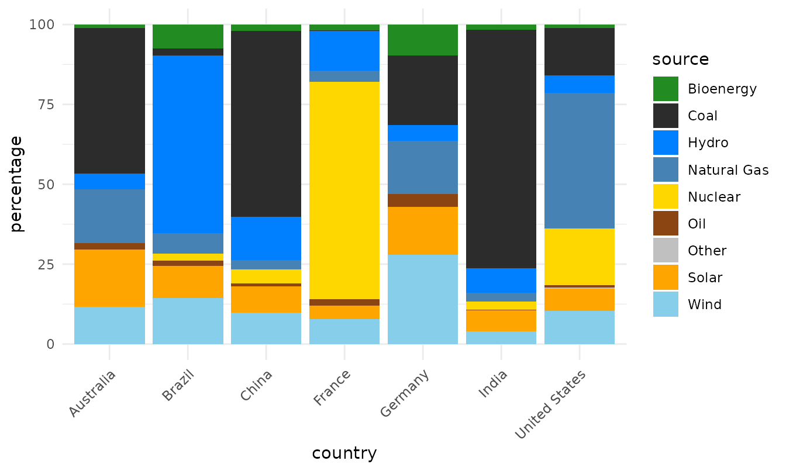
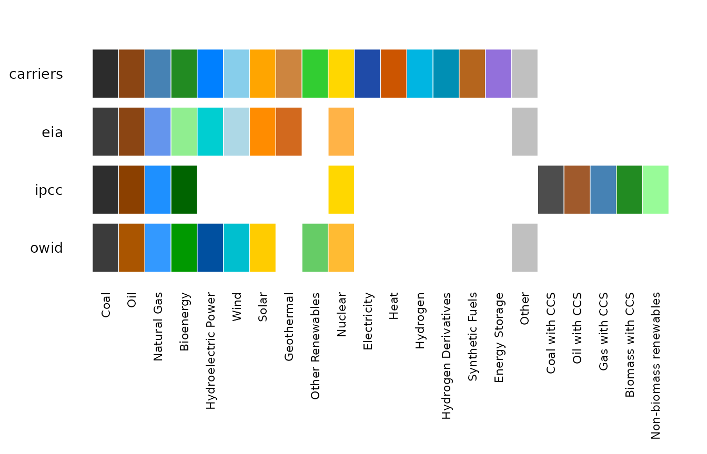
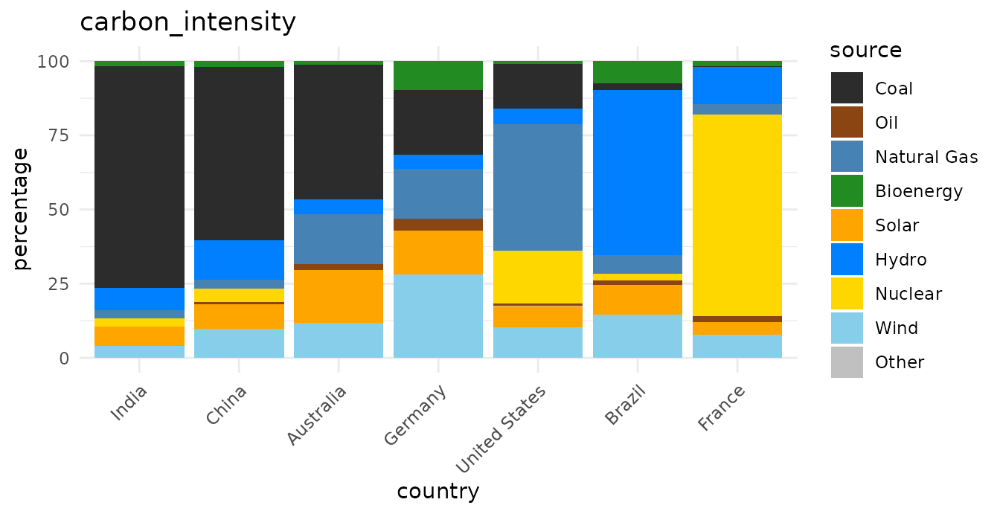
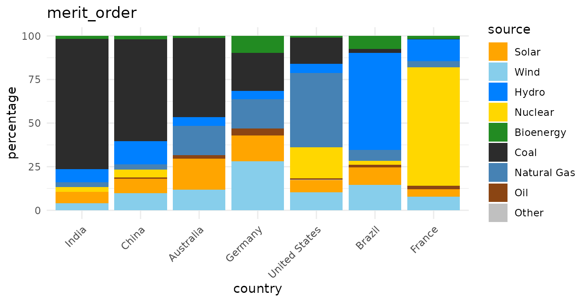
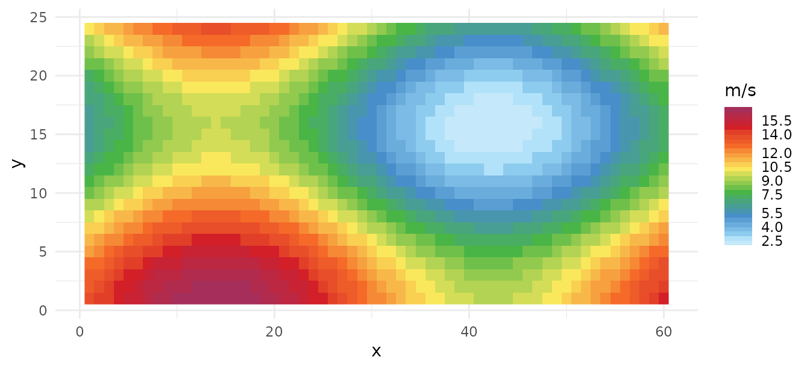
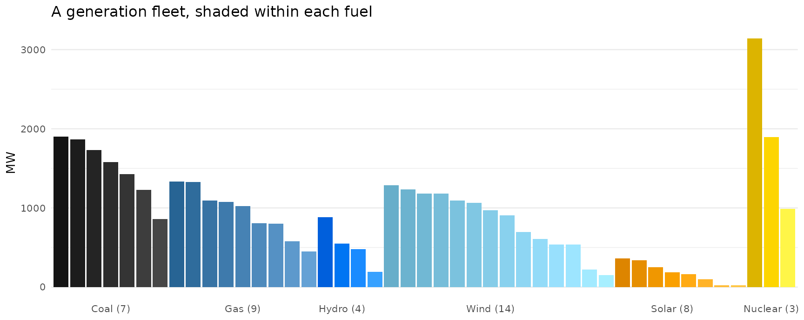

The problem
Energy datasets do not agree on what to call things. One says
Natural Gas, another nat gas, a third
NG; plant-level data says COAL1 and
COAL2. Published figures then colour them inconsistently,
so two charts of the same system are hard to compare.
energypal keeps the colours in YAML files with their
provenance, and resolves whatever labels your data happens to use onto
them.
d <- owid_energy_mix |> filter(year == max(year))
unique(d$source)
#> [1] "Bioenergy" "Coal" "Hydro" "Natural Gas" "Nuclear"
#> [6] "Oil" "Solar" "Wind" "Other"
ggplot(d, aes(country, percentage, fill = source)) +
geom_col() +
scale_fill_energy() +
theme_minimal() +
theme(axis.text.x = element_text(angle = 45, hjust = 1))
No preprocessing, no manual colour vector, no renaming.
Seven mixes in arbitrary order are hard to compare, though. A palette
carries more than colour — carriers records a carbon
intensity per fuel — so the countries can be ordered by how
carbon-intensive their mix is:
carriers <- energypal_match(unique(d$source), warn = FALSE) |>
select(source = original, carrier = matched)
# One row per carrier that has a figure. A name can appear twice in the table -
# Nuclear is both a group and the carrier inside it - and joining on it unfiltered
# fans the data out.
intensity <- energypal_table("carriers") |>
filter(!is.na(carbon_intensity)) |>
distinct(carrier = name, carbon_intensity)
rank <- d |>
left_join(carriers, by = "source") |>
left_join(intensity, by = "carrier") |>
group_by(country) |>
summarise(ci = weighted.mean(carbon_intensity, percentage, na.rm = TRUE)) |>
arrange(desc(ci))
rank
#> # A tibble: 7 × 2
#> country ci
#> <chr> <dbl>
#> 1 India 640.
#> 2 China 511.
#> 3 Australia 482.
#> 4 Germany 287.
#> 5 United States 240.
#> 6 Brazil 69.9
#> 7 France 34.9
d <- d |> mutate(country = factor(country, levels = rank$country))That is an ordering, not an emissions estimate. The intensities are indicative lifecycle medians for arranging charts; see the caveat below. Every figure from here on uses this ordered
d.
Getting a palette
energypal() returns a named colour vector. By default
you get the main level — the carriers themselves.
energypal()
#> FossilCoal FossilOil FossilGas Bioenergy
#> "#2C2C2C" "#8B4513" "#4682B4" "#228B22"
#> Hydro Wind Solar Geothermal
#> "#0080FF" "#87CEEB" "#FFA500" "#CD853F"
#> OtherRenewables Nuclear Electricity Heat
#> "#32CD32" "#FFD700" "#1F4BA8" "#CC5500"
#> Hydrogen HydrogenDerivatives SyntheticFuels Storage
#> "#00B5E2" "#008FB4" "#B5651D" "#9370DB"
#> Other
#> "#C0C0C0"n takes the first few, as
RColorBrewer::brewer.pal() does:
energypal("eia", n = 5)
#> FossilCoal FossilOil FossilGas Bioenergy Hydro
#> "#3C3C3C" "#8B4513" "#6495ED" "#90EE90" "#00CED1"The aggregate groups above the carriers, and the fuel subtypes below them, are available but off by default — a plotting palette wants distinct colours, and adjacent subtypes are deliberately near-identical.
length(energypal("carriers"))
#> [1] 17
length(energypal("carriers", include_groups = TRUE, include_subtypes = TRUE))
#> [1] 93Names can be canonical identifiers or display labels:
energypal("carriers", n = 4, label_style = "long")
#> Coal Oil Natural Gas Bioenergy
#> "#2C2C2C" "#8B4513" "#4682B4" "#228B22"What is available
energypal_info() |> select(name, title, type, n)
#> name title type
#> 1 carriers Energy carriers discrete
#> 2 eia EIA Annual Energy Outlook (approximation) discrete
#> 3 epa EPA greenhouse gas inventory (approximation) discrete
#> 4 ipcc IPCC AR6 WGIII energy supply (approximation) discrete
#> 5 owid Our World in Data energy mix (approximation) discrete
#> 6 solaratlas_ghi Global Solar Atlas GHI continuous
#> 7 solaratlas_pvout Global Solar Atlas PV output continuous
#> 8 technologies Energy technologies and sectors discrete
#> 9 windatlas_speed Global Wind Atlas mean wind speed (approximation) continuous
#> n
#> 1 93
#> 2 12
#> 3 12
#> 4 11
#> 5 12
#> 6 28
#> 7 24
#> 8 80
#> 9 31energypal_show() draws them. Given several names it
draws an aligned comparison instead, which is the quickest way to see
how published schemes differ.
energypal_show(c("carriers", "eia", "ipcc", "owid"))
Matching messy labels
energypal_colors() maps labels to colours.
energypal_match() shows its working, which is what you want
when a label is not colouring as expected.
energypal_match(c("Coal", "natural gas", "Solar PV", "COAL1", "Flux Capacitor"))
#> original matched color method candidates
#> 1 Coal FossilCoal #2C2C2C alias <NA>
#> 2 natural gas NaturalGas #4682B4 canonical <NA>
#> 3 Solar PV SolarPV #FFA500 canonical <NA>
#> 4 COAL1 FossilCoal #2C2C2C alias <NA>
#> 5 Flux Capacitor <NA> <NA> <NA> <NA>The method column names the stage that resolved each
label: an exact match, a canonicalised one (case, spacing and
punctuation removed), a declared alias, a fuzzy match, or containment.
Anything unresolved comes back grey rather than silently taking a
neighbour’s colour.
Aliases live in the palette file, not in the package code, so your own palette can teach the matcher your own vocabulary. More on that below.
Ordering
Legend and stack order carry meaning in energy charts. Palettes declare orderings by name:
energypal_orders("carriers") |> select(order, kind, n)
#> order kind n
#> 1 carbon_intensity declared 9
#> 2 dispatchability declared 10
#> 3 merit_order declared 8
#> 4 renewability declared 10
#> 5 spec computed 93
#> 6 alpha computed 93
#> 7 hue computed 93
#> 8 lightness computed 93
#> 9 chroma computed 93
for (o in c("carbon_intensity", "merit_order")) {
print(
ggplot(d, aes(country, percentage, fill = source)) +
geom_col() +
scale_fill_energy(order = o) +
labs(title = o) +
theme_minimal() +
theme(axis.text.x = element_text(angle = 45, hjust = 1))
)
}

The sequence changes; the colour of each carrier does not.
Orderings are for presentation only. They arrange legends and chart series. They are indicative, not validated figures, and must not be used in calculations. Every declared ordering carries a note saying so, and
energypal_orders()prints it:
cat(energypal_orders("carriers")$note[1])
#> Presentation only. Orders chart series and legends; NOT a model input and not to be used in calculations. Lifecycle medians vary widely with fuel quality, plant vintage, capacity factor and system boundary.If your fill column is already a factor, its level order is respected
— leave order alone and set the factor levels as you
normally would.
Continuous and binned scales
Resource maps need a ramp rather than a set of categories. Those
palettes are type = "continuous" and carry their own break
points.
grid <- expand.grid(x = 1:60, y = 1:24)
grid$wind <- 2 + 15 * (sin(grid$x / 9) + cos(grid$y / 5) + 2) / 4
ggplot(grid, aes(x, y, fill = wind)) +
geom_raster() +
scale_fill_energy_b(palette = "windatlas") +
labs(fill = "m/s") +
theme_minimal()
scale_fill_energy_b() takes the bins from the palette;
scale_fill_energy_c() gives a smooth gradient instead.
Passing a continuous palette to the discrete scale, or the reverse, is
an error rather than a silent half-result.
Several series, one carrier
Plant-level data is the common case: a fleet has three coal units,
two gas turbines and four wind farms, and colouring by carrier alone
draws them all identically. gradient = TRUE spreads each
cluster into distinct tones of its carrier, so the fuel is still
readable at a glance but the units are told apart.
energypal_colors(c("Coal_Ratcliffe", "Coal_Drax", "Coal_Cottam",
"CCGT_Pembroke", "CCGT_Staythorpe", "Wind_Whitelee"),
gradient = TRUE, warn = FALSE)
#> Coal_Ratcliffe Coal_Drax Coal_Cottam CCGT_Pembroke CCGT_Staythorpe
#> "#141414" "#2C2C2C" "#464646" "#276494" "#64A1D5"
#> Wind_Whitelee
#> "#87CEEB"Each cluster is grouped by the carrier it resolved to, not by its colour, so two carriers that happen to share a hex code still get their own gradients. A carrier with a single unit keeps the plain palette colour.
The same argument works on the scale, which is how you would normally
use it. Keeping each fuel’s units adjacent is what makes the clusters
legible, and energypal_match() gives you the carrier to
sort on. Here is a whole fleet — forty-five units across six fuels:
set.seed(42)
unit_group <- function(prefix, k, lo, hi) {
data.frame(unit = sprintf("%s_%02d", prefix, seq_len(k)),
mw = round(runif(k, lo, hi)))
}
fleet <- bind_rows(
unit_group("Coal", 7, 400, 2000), unit_group("CCGT", 9, 300, 1400),
unit_group("Hydro", 4, 100, 900), unit_group("Wind", 14, 50, 1300),
unit_group("Solar", 8, 20, 400), unit_group("Nuclear", 3, 900, 3200)
)
fleet <- fleet |>
left_join(energypal_match(fleet$unit, warn = FALSE) |>
select(unit = original, carrier = matched),
by = "unit") |>
mutate(carrier = factor(carrier, levels = names(energypal()))) |>
arrange(carrier, desc(mw)) |>
mutate(unit = factor(unit, levels = unit))
# forty-five unit names will not fit, so label each cluster once instead
clusters <- fleet |>
group_by(carrier) |>
summarise(at = unit[ceiling(n() / 2)], units = n(), .groups = "drop") |>
left_join(energypal_table("carriers") |> distinct(carrier = name, label = label_short),
by = "carrier")
ggplot(fleet, aes(unit, mw, fill = unit)) +
geom_col() +
scale_fill_energy(gradient = TRUE) +
scale_x_discrete(breaks = clusters$at,
labels = sprintf("%s (%d)", clusters$label, clusters$units)) +
labs(title = "A generation fleet, shaded within each fuel",
x = NULL, y = "MW") +
theme_minimal(base_size = 10) +
theme(panel.grid.major.x = element_blank(), legend.position = "none")
Every unit gets its own colour, and the fuel is still readable across the whole chart:
fleet |>
mutate(color = energypal_colors(as.character(unit), gradient = TRUE, warn = FALSE)) |>
group_by(carrier) |>
summarise(units = n(), colours = n_distinct(color))
#> # A tibble: 6 × 3
#> carrier units colours
#> <fct> <int> <int>
#> 1 FossilCoal 7 7
#> 2 FossilGas 9 9
#> 3 Hydro 4 4
#> 4 Wind 14 14
#> 5 Solar 8 8
#> 6 Nuclear 3 3The shades are computed in OKLAB, a perceptually uniform space, so
the step looks the same whether the carrier is near-black coal or bright
yellow nuclear — the previous HSV implementation collapsed bright
colours to a single tone. energypal_gradient() does this
for one colour on its own:
energypal_gradient("#FFA500", n = 5) # Solar
#> [1] "#DD8500" "#EE9500" "#FFA500" "#FFB52C" "#FFC644"
energypal_gradient("#2C2C2C", n = 5) # Coal
#> [1] "#141414" "#202020" "#2C2C2C" "#393939" "#464646"Your own palette
A named vector is a palette. Save it, edit it, load it back.
p <- energypal_create(c(Coal = "#4E4E4E", Gas = "#2E86AB", Solar = "#F6AE2D"),
name = "myproject")
f <- tempfile(fileext = ".yml")
energypal_write(p, f)
cat(readLines(f), sep = "\n")
#> # energypal palette
#> #
#> # Each entry may be a bare colour, or a map with _color, _short, _long and
#> # _aliases. Add detail to individual entries as needed; the rest can stay simple.
#>
#> meta:
#> name: myproject
#> title: myproject
#> version: 0.1.0
#>
#> colors:
#> Coal: "#4E4E4E"
#> Gas: "#2E86AB"
#> Solar: "#F6AE2D"Entries start as bare colours and can be expanded in place with labels and aliases, without restructuring the file:
writeLines(c(
"meta:",
" name: myproject",
"colors:",
' Coal: "#4E4E4E"',
" Gas:",
' _color: "#2E86AB"',
" _long: Natural Gas",
" _aliases: [nat gas, NG, methane]"
), f)
energypal_colors(c("Coal", "nat gas", "METHANE"), file = f)
#> Coal nat gas METHANE
#> "#4E4E4E" "#2E86AB" "#2E86AB"energypal_register() makes a file available by name for
the rest of the session, so it can be used anywhere a built-in name
works:
energypal_register("myproject", f)
energypal("myproject")
#> Coal Gas
#> "#4E4E4E" "#2E86AB"Where next
-
vignette("palettes", package = "energypal")previews every palette with its sources. -
energypal_info()lists what is installed, including palettes you register. - Adding a palette is one YAML file and no code.